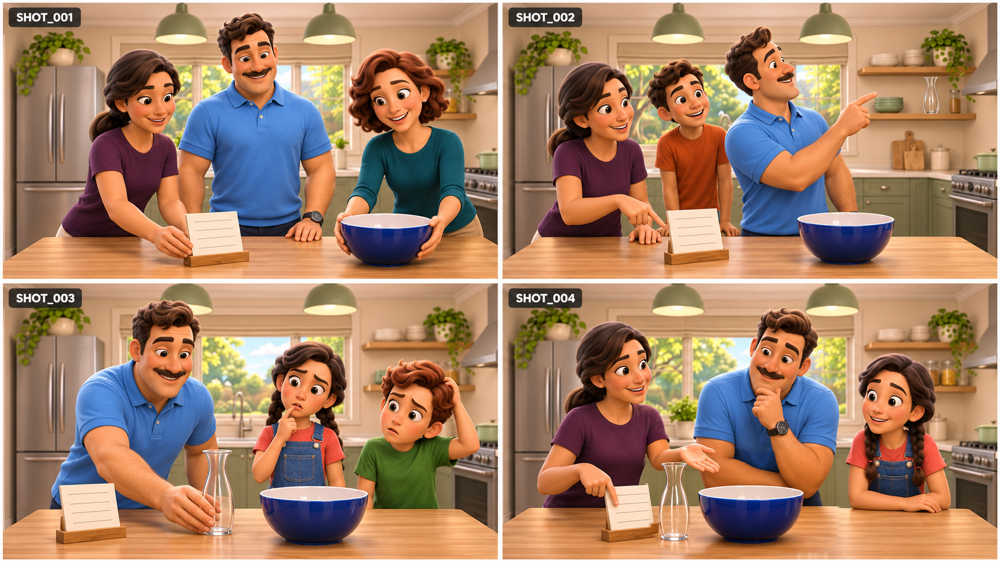
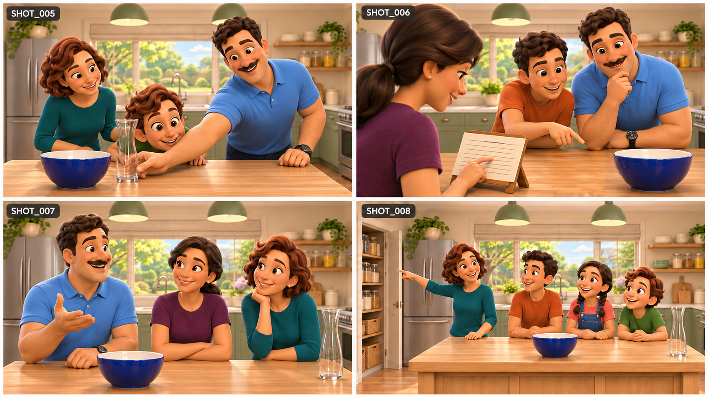
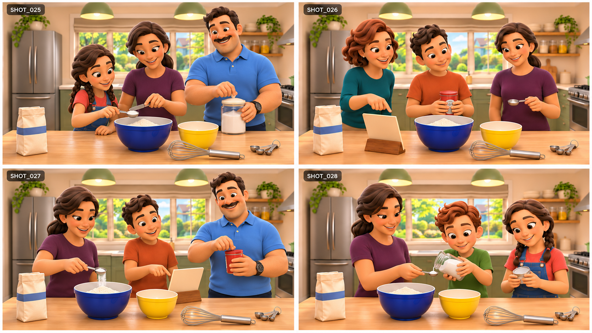
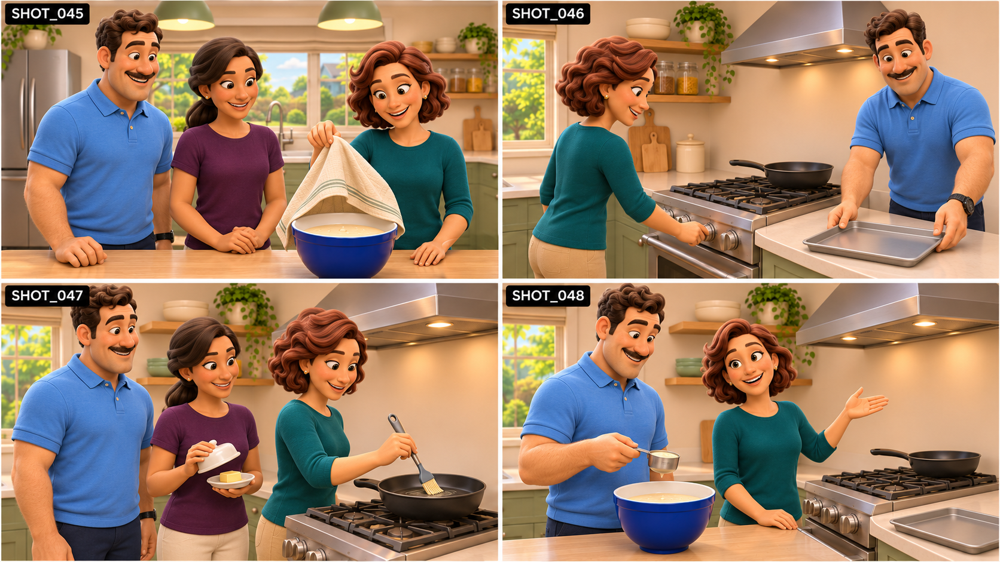
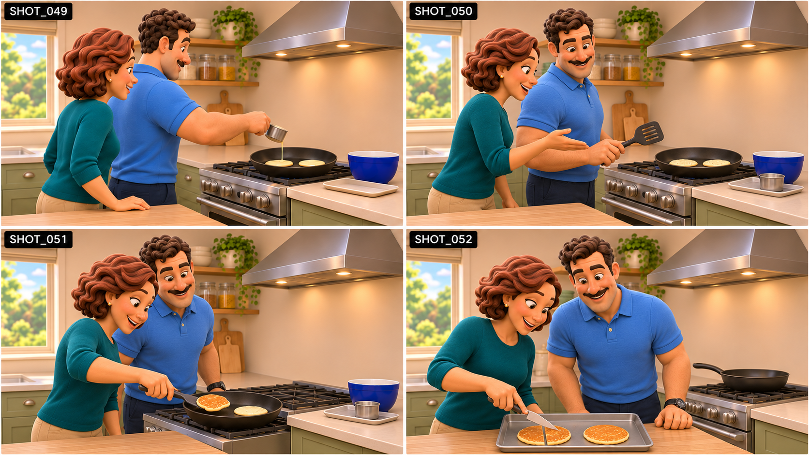
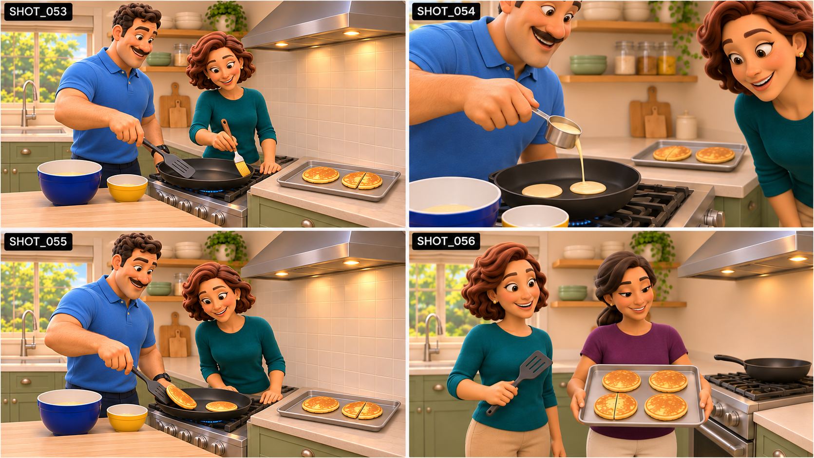
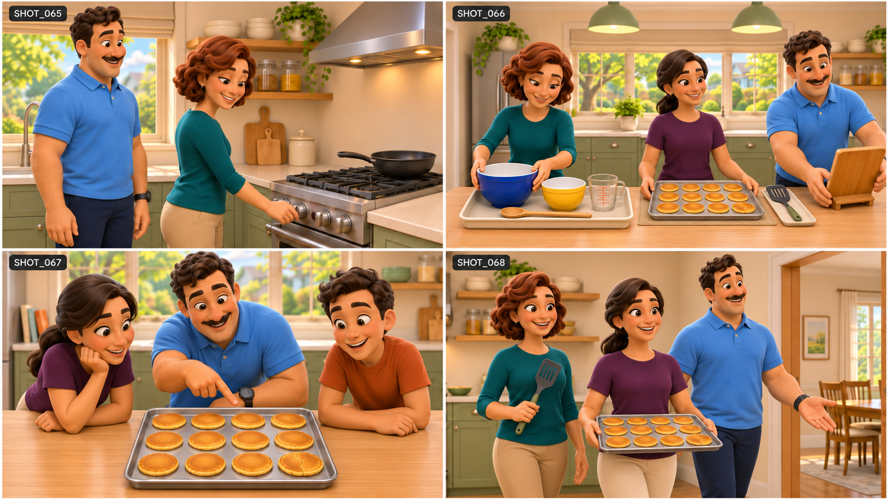
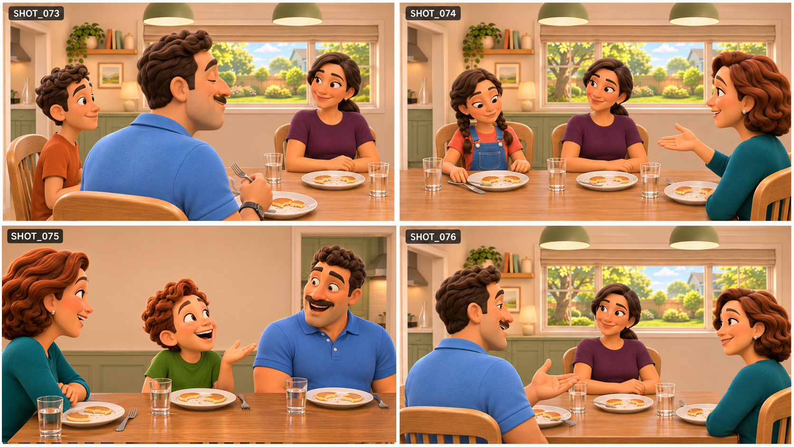
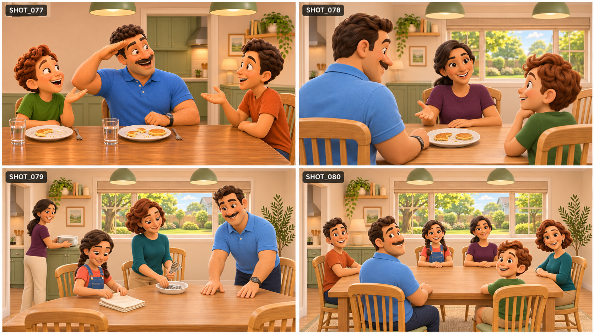

001: The breakfast we promised · 002: One word, two pictures · 003: A vase joins the team · 004: Before anything goes in

005: A harmless near-miss · 006: The clue on the card · 007: An expert asks a better question · 008: A kitchen search

009: The right flour · 010: The vase returns home · 011: A bowl with room to work · 012: The whisk is not a wish

013: A spoon is not every measure · 014: A cup that tells the truth · 015: The flat helper waits · 016: The pan stays with the adults

017: Ingredients, not decorations · 018: The cold ingredients · 019: Twelve means two each · 020: Read before reaching

021: Everyone starts with clean hands · 022: Two bowls, two clear jobs · 023: The first level cup · 024: Two cups means stop at two

025: Sugar has a smaller measure · 026: A powder with its own name · 027: One tablespoon, three teaspoons · 028: Half a teaspoon is enough

029: Four tablespoons, divided first · 030: Melt with an adult at the stove · 031: Warm is different from hot · 032: Two eggs, handled by Nina

033: Clean hands after the shells · 034: Milk has a line to meet · 035: The milk goes back cold · 036: The wet team comes together

037: Wet joins dry once · 038: An empty bowl is a useful clue · 039: Gentle folds, not a race · 040: Stop when the work is done

041: Give the batter its quiet minutes · 042: Six plates find their places · 043: Useful work while we wait · 044: The hardest job is not poking it

045: Five minutes later · 046: Heat belongs in the adult zone · 047: A little butter across six batches · 048: Twelve portions, one bowl

049: The first pair takes shape · 050: Watch the edges, not the clock alone · 051: A low, careful turn · 052: Crooked and properly cooked

053: A quieter confidence · 054: The second pair begins · 055: Dan follows the useful plan · 056: Four cooked pancakes

057: A third pair, the same method · 058: Halfway is not finished · 059: The fourth pair needs the same care · 060: Eight ready, four to go

061: Careful is becoming comfortable · 062: Two spaces are still waiting · 063: The last of the one batch · 064: Twelve, cooked all the way through

065: The last stove job · 066: Raw tools finish separately · 067: The first pancake keeps its place · 068: Carry the food, leave the heat

069: The adventurous serving · 070: Two for Leo, two for Ella · 071: The final six find their plates · 072: All six, ready together

073: The first bite was worth waiting for · 074: Ella's careful line mattered · 075: The empty vase had a quiet morning · 076: A useful kind of help

077: Pieces and pancakes · 078: Another day, another useful question · 079: Breakfast finishes together · 080: One breakfast, one family